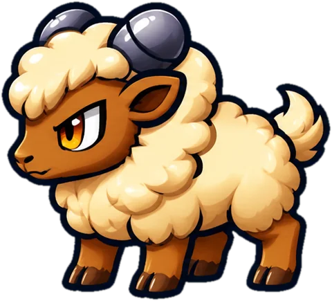

 Wind
WindTap a stage to read its story.
Ramkin is a plump, woolly cream-colored calf with a tiny grey nub of a horn pushing from its forehead. It wobbles across the granite ledges of the heights, planting each hoof with exaggerated care, always looking down at the rock before committing. A small grey cap-like stone formation seems to have grown into the fur between its ears, giving it a permanently studious look. Guardians of the heights say Ramkin is the only creature that never slips - it tests every stone with one hoof before trusting it, a habit the mountain seems to reward.
Field note: Ramkin taps every stone three times before stepping on it - it has never once chosen a stone that crumbled.
Granite Heights. Ramkin and its family are found in the Granite Heights. See everyone who lives there.
Share a Bond Food that matches its types to become friends. Ramkin loves:
A Bond Food is not a trick. It joins your spirit with the Kimuro's spirit, and only when it chooses you.
Print the Kimuro adventure packs: mazes, cards, a board game and Bond Mark medals.
See the printable packs